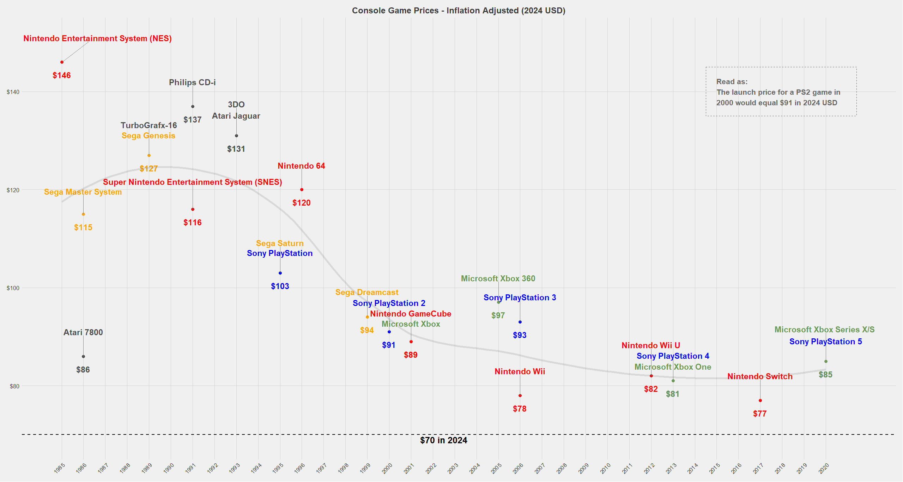

Video games have had an explosive appearance and steady climb in popularity over the years. One of the things many wonder is, How much are video games worth? Well, the short answer is that the global gaming market worth is estimated to be ~250 Billion USD in 2025. It is said that more than 3.2 billion people worldwide play video games. But to take a deeper look we can look at the cost of game consoles and video game software over the years. As early as the Atari 2600, we can see that its inflation-adjusted price was $1,020, making this surprisingly one of the most expensive game systems ever. And the cost of the video games themselves also reflects this. Before 1998, the average cost of video games with inflation accounted for was over $100 a game. The cost of video game trends has gone down over the years, only recently starting to go back up in 2023-24 with the release of the PS5 and Xbox Series X/S.
